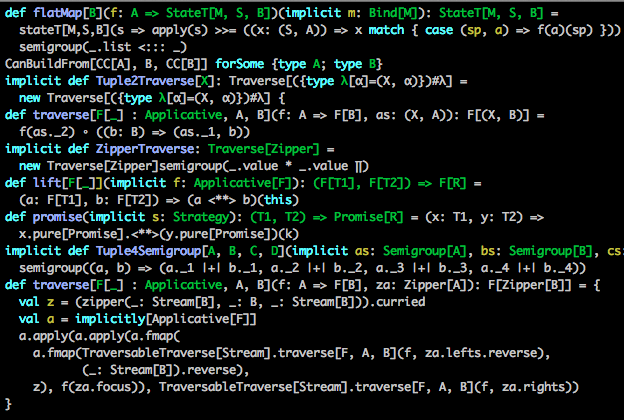
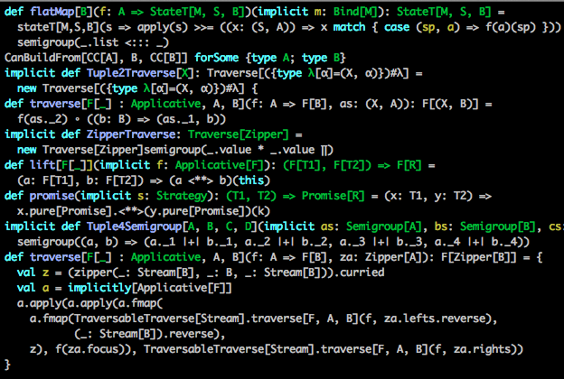

Functors, Monads, and Other Scary Words
Programming with Scalaz
- Yuvi Masory
- May 21, 2012
- CCAD


"1".toInt
"foo".toInt //uh-oh
val iOpt: Option[Int] = "foo".parseInt
println(iOpt.isDefined ? "parsed" | "unparseable")
== Considered Harmfulval admin: Option[User] = //...
val curUser: User = //...
if (curUser == admin) { //oops! always false
//...
}
=== Considered Awesomeimplicit def userEqual = equalA[User]
if (curUser === admin) { //doesn't compile!
//...
}
List#head Considered Annoying//my startup
val payingCustomers: List[Customer] = //...
val customer = payingCustomers.head //throws exception!
Empty lists don’t have a head.
//my business
class Customer {
def creditCards: List[String]
}
object Customer {
def mkCustomer(name: String, creditCard: String, creditCards: String*): Customer = ...
}
someCustomer.creditCards.headOption match {
case Some(creditCard) => //now that's annoying
case None
}
Checking for empty lists is unnecessary in many cases. But who knows which ones?
scalaz.NonEmptyListNonEmptyList(1)
NonEmptyList(1, 2, 3)
NonEmptyList(0) //doesn't compile!
val lst: NonEmptyList[Int] = ...
lst.head //completely safe
You may have noticed this strange bit
implicit def userEqual = equalA[User]
A simple definition: types are collections of expressions.
Because we want our functions to work on many types.
Polymorphic functions may do something different depending on its input type.
trait Equal[A] {
def ===(a: A): Boolean
}
case class Person(name: String, zip: Int) extends Equal[Person] {
def ===(that: Person) = //...
}
Person("yuvi", 19104) === Person("colleen", 12345)
Person source code?
trait Equal[A] {
def(a1: Equal, a2: Equal): Boolean
}
object PersonEqual extends Equal[Person] {
def equals(p1: Person, p2: Person): Boolean = //...
}
PersonEqual equals (Person("yuvi", 19104), Person("colleen", 12345))
trait Equal[A] {
def(lhs: A, rhs: A): Boolean
}
object Equal {
implicit def addEqualOps[A:Equal](lhs: A) = new EqualOps(lhs)
}
class EqualOps[A](lhs: A)(implicit ev: Eq[A]) {
def ===(rhs: A) ev.eq(lhs, rhs)
}
implicit object PersonEqual extends Equal[Person] {
def equals(p1: Person, p2: Person): Boolean = //...
}
import Equal._
p1 === p2
//"is-a"
def mycompare[A <: Comparable](lhs: A, rhs: A) = lhs compare rhs
//"has-a"
def myequal[A:Equal](lhs: A, rhs: A) = lhs equals rhs
//"has-a", de-sugared, note "ev" is never used
def myequal[A](lhs: A, rhs: A)(ev: Equal[A]) = lhs equals rhs
Let’s keep it simple: if you can map over it, it’s a functor.
trait Functor[F[_]] {
def map[A, B](r: F[A], f: A => B): F[B]
}
Option is a Functorobject OptionIsFunctor: Functor[Option] = new Functor[Option] {
def map[A, B](r: Option[A], f: A => B) = r match {
case None => None
case Some(a) => Some(f(a))
}
}
List is a Functorobject ListIsFunctor: Functor[List] = new Functor[List] {
def map[A, B](as: List[A], f: A => B) = as match {
case Nil => Nil
case h :: t => f(h) :: map(t, f)
}
}
No time for this … and not so natural in Scala since functions are not curried by default.
for {
url <- urlOpt
pw <- passwordOpt
uname <- usernameOpt
} yield DriverManager getConnection (url, pw, uname)
(url |@| pw |@| uname) { Driver.getConnection }
Functorfor (el <- List(1, 2)) yield el + 10
List(1, 2) map { _ + 10 }
Functors that can flatMap
def perfectRoot(i: Int): Option[Int] = //...
val opt = perfectRoot(10000)
opt map { perfectRoot(_) }
//Some(Some(10))
opt flatMap { perfectRoot(_) }
//Some(10)
trait Monad[M[_]] extends Applicative[M] {
def pure[A](a: => A): M[A]
def flatMap[A, B](a: M[A], f: A => M[B]): M[B]
}
List
Option
Function1
Monadfor {
a <- aOpt
b <- bOpt
c <- cOpt
} yield a + b + c
aOpt.flatMap { a =>
bOpt.flatMap { b =>
cOpt.flatMap { c =>
a + b + c
}
}
}
Things you can add.